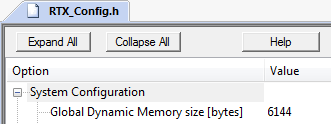
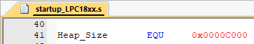
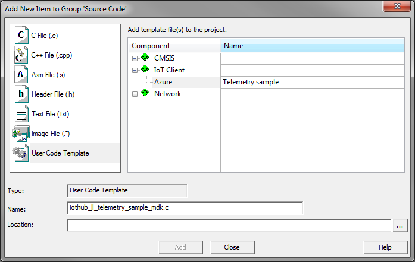
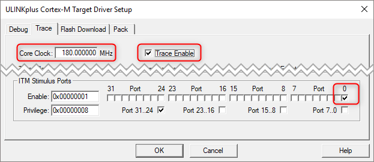

Getting started with Microsoft Azure IoT and MDK
This tutorial explains how to use MDK and the Azure_IoT_Device pack to connect your application to the Microsoft Azure IoT Hub.
Prerequisites
You require a development board with a device that is supported by CMSIS-Drivers. Lots of devices from STMicroelectronics and NXP do have these drivers available. Please consult the device database for a list of devices and development boards.
When you have chosen your device and development board, use  Pack Installer to download and install the following software packs:
Pack Installer to download and install the following software packs:
- MDK-Packs::Azure_IoT_Device
- MDK-Packs::IoT_Socket v1.0.0 or newer
- ARM::CMSIS v5.0.1 or newer
- ARM::mbedTLS v1.5.0 or newer
- Keil::MDK-Middleware v7.7.0 or newer
- Device family pack for the selected device
Note:
- In order to be able to use the Microsoft Azure IoT Hub Connector, you require a MDK-Professional license. µVision allows you to start a seven day trial from within the tool.
- This tutorial assumes that you know how to work with µVision (creating projects, adding template code, configuring software components). If not, check out the MDK Getting Started Guide.
- In this tutorial, your MDK installation folder will be referenced as <INSTALL_FOLDER>. Usually, it is C:\Keil_v5.
In the Microsoft Azure portal
Create an IoT hub
- Sign in to the Azure portal.
- Select Create a resource > Internet of Things > IoT Hub
- In the IoT hub pane, enter the following information for your IoT hub:
- Subscription: Choose the subscription that you want to use to create this IoT hub.
- Resource group: Create a resource group to host the IoT hub or use an existing one. For more information, see Use resource groups to manage your Azure resources.
- Region: Select the closest location to you.
- Name: Create a name for your IoT hub. If the name you enter is available, a green check mark appears.
Important!
The IoT hub will be publicly discoverable as a DNS endpoint, so make sure to avoid any sensitive information while naming it.
- Select Next: Size and scale to continue creating your IoT hub.
- Choose your Pricing and scale tier. For this article, select the F1 - Free tier if it’s still available on your subscription. For more information, see the Pricing and scale tier.
- Select Review + create.
- Review your IoT hub information, then click Create. Your IoT hub might take a few minutes to create. You can monitor the progress in the Notifications pane.
Register a device in the IoT hub for your device
- In your IoT hub navigation menu, open IoT devices, then click Add to register a device in your IoT hub.
- Enter a Device ID for the new device. Device IDs are case sensitive.
Important!
The device ID may be visible in the logs collected for customer support and troubleshooting, so make sure to avoid any sensitive information while naming it.
- Click Save.
- After the device is created, open the device from the list in the IoT devices pane.
- Copy the Connection string—primary key to use later.
In µVision
Follow these steps to create a simple application that connects to the Microsoft Azure IoT Hub.
Create project and select software components
- Create a new project. Select the device that you are using on your development board.
- The Manage Run-Time Environment window opens. Select the following software components:
- IoT Client:Azure
- IoT Utility:Azure:MQTT
- IoT Utility:Azure:Common
- IoT Utility:Socket:MDK Network
- CMSIS:RTOS2:Keil RTX5
- CMSIS:CORE
- Security:mbed TLS
- Network: make sure to select the variant MDK-Pro
- Network:Socket:BSD
- Network:Socket:TCP
- Network:Socket:UDP
- Network:Service:DNS Client
- Network:Service:SNTP Client
- Network:Interface:ETH
- Network:CORE:IPv4 Release
- CMSIS Driver:Ethernet/MAC/PHY (API) (depending on your hardware)
- Device:Startup (and any other Device dependent components)
Optional (for printf debug output on the console):
- Configure the Azure IoT Client:
- Open the Options for target dialog (Alt+F7), go to the C/C++ tab and add define
DONT_USE_UPLOADTOBLOB to the C pre-processor.
- Configure mbedTLS: Security:mbedTLS_config.h
- In the Project window, double-click this file to open it. It contains generic settings for mbed TLS and its configuration requires a thorough understanding of SSL/TLS. We have prepared an example file that contains all required settings for Azure IoT Hub. The file available in
<INSTALL_FOLDER>/ARM/Pack/MDK-Packs/Azure_IoT_Device/_version_/config/mbedTLS_config.h. Copy its contents and replace everything in the project’s mbedTLS_config.h file.
- Configure Network:: Network:Net_Config_UDP.h
- Increase the Number of UDP Sockets to at least 6.
- If you are using the software components described above, you do not need to configure other Network components. The default settings will work. If you do not have DHCP available in your network, please refer to the MDK-Middleware documentation on how to set a static IP address.
- Configure RTX5: CMSIS:RTX_Config.h
- If you are using the provided template (see below), you need to set the System - Global Dynamic Memory size to at least 6144:

This large amount of dynamic memory is not required for custom projects.
- Configure Heap: startup_<device>.s
- Configure at least 48 KB (0xC000) of heap memory.

This is required for the mbed TLS certificates.
- Configure device specific hardware:
- Configure the CMSIS Ethernet driver and other device specific components (clock system, I/O, …) as required. Please consult your device’s/board’s documentation for more information.
Add Template code
The Azure_IoT_Device pack includes code samples that can be used to test the connection to Microsoft Azure IoT Hub. In the Project window, right-click “Source Group 1” and select “Add New Item to Group” - “User Code Template”, to add user code templates.
- Telemetry sample code:
- Add IoT Client:Azure:Telemetry sample

- Update the connection string constant
connectionString with the Connection string—primary key obtained from Azure portal.
- Add CMSIS:RTOS2:Keil RTX5:main and update:
- Add an attribute for an increased stack size for the application thread. Sample requires a thread stack size of 4 KB:
const osThreadAttr_t app_main_attr = { .stack_size = 4096U };
- Change application thread creation (include the attribute defined above):
osThreadNew(app_main, NULL, &app_main_attr);
- Add an include for
time and Network library (beginning of file):
#inlcude <time.h>
#inlcude "rl_net.h"
- Add a timer callback to handle current time 1 second increments:
static uint32_t curr_time;
static void timer_callback (void *argument) {
curr_time++;
}
- Add
time function:
time_t time(time_t * timer) {
return (time_t)(curr_time);
}
- Add a prototype for the example’s top level function:
extern int demo (void);
- Add
time and Network initialization in the app_main function:
osTimerId_t timer_id;
uint32_t addr;
netInitialize();
do {
osDelay(500U);
netIF_GetOption(NET_IF_CLASS_ETH | 0, netIF_OptionIP4_Address, (uint8_t *)&addr, sizeof (addr));
} while (addr == 0U);
netSNTPc_GetTimeX("time.google.com", &curr_time, NULL);
timer_id = osTimerNew(timer_callback, osTimerPeriodic, NULL, NULL);
osTimerStart(timer_id, 1000U);
- Add a call to the example’s top level function into the
app_main function after above mentioned initialization (before the for loop):
demo();
Code templates are prepared to output printf statements for debugging purposes. To show these effectively, you can use the software component Compiler:I/O:STDOUT:ITM to show the messages in the Debug printf window. To enable this output, do the following:
- Open the Options for target dialog (Alt+F7).
- Go to the Debug tab. Select the debug adapter that is connected to your target and configure these Settings:
- Debug tab: Set Port to SW.
- Trace tab: Set the Core Clock to the system clock of your target, Select Trace Enable and set make sure that ITM Stimulus Port 0 is enabled:

Run/debug the application
- Build the application (F7) and download (F8) to target.
Enter debug (CTRL+F5) and run (F5) the application on the target and monitor the console output via Serial Window - Debug (printf) Viewer. You should see something similar:
Creating IoTHub handle
Sending message 1 to IoTHub
Sending message 2 to IoTHub
Sending message 3 to IoTHub
Sending message 4 to IoTHub
Sending message 5 to IoTHub
Confirmation callback received for message 1 with result IOTHUB_CLIENT_CONFIRMATION_OK
Confirmation callback received for message 2 with result IOTHUB_CLIENT_CONFIRMATION_OK
Confirmation callback received for message 3 with result IOTHUB_CLIENT_CONFIRMATION_OK
Confirmation callback received for message 4 with result IOTHUB_CLIENT_CONFIRMATION_OK
Confirmation callback received for message 5 with result IOTHUB_CLIENT_CONFIRMATION_OK
Press any key to continue